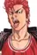
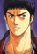
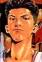
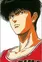

Berserk
Score: 8.55 Ranked: #119 Popularity: #811 Members: 312,071
Synopsis
Hanamichi Sakuragi, infamous for his temper, massive height, and fire-red hair, enrolls in Shohoku High, hoping to finally get a girlfriend and break his record of being rejected 50 consecutive times in middle school. His notoriety precedes him, however, leading to him being avoided by most students. Soon, after certain events, Hanamichi is left with two unwavering thoughts: "I hate basketball," and "I desperately need a girlfriend." One day, a girl named Haruko Akagi approaches him without any knowledge of his troublemaking ways and asks him if he likes basketball. Hanamichi immediately falls head over heels in love with her, blurting out a fervent affirmative. She then leads him to the gymnasium, where she asks him if he can do a slam dunk. In an attempt to impress Haruko, he makes the leap, but overshoots, instead slamming his head straight into the blackboard. When Haruko informs the basketball team's captain of Hanamichi's near-inhuman physical capabilities, he slowly finds himself drawn into the camaraderie and competition of the sport he had previously held resentment for. [Written by MAL Rewrite]
Background
Slam Dunk adapts volumes 1-22 of the original manga.
Information
- Type: Manga
- Volumes: 31
- Status: Finished
- Published: October 1990 to June 1996
- Authors: Takehiko Inoue
- Genres:Sports
- Theme: School, Team Sports
Characters & Voice Actors
|  Sakuragi Hanamichi Main |  Mitsui Hisashi Main |
|  Miyagi Ryouta Main |  Rukawa Kaede main |